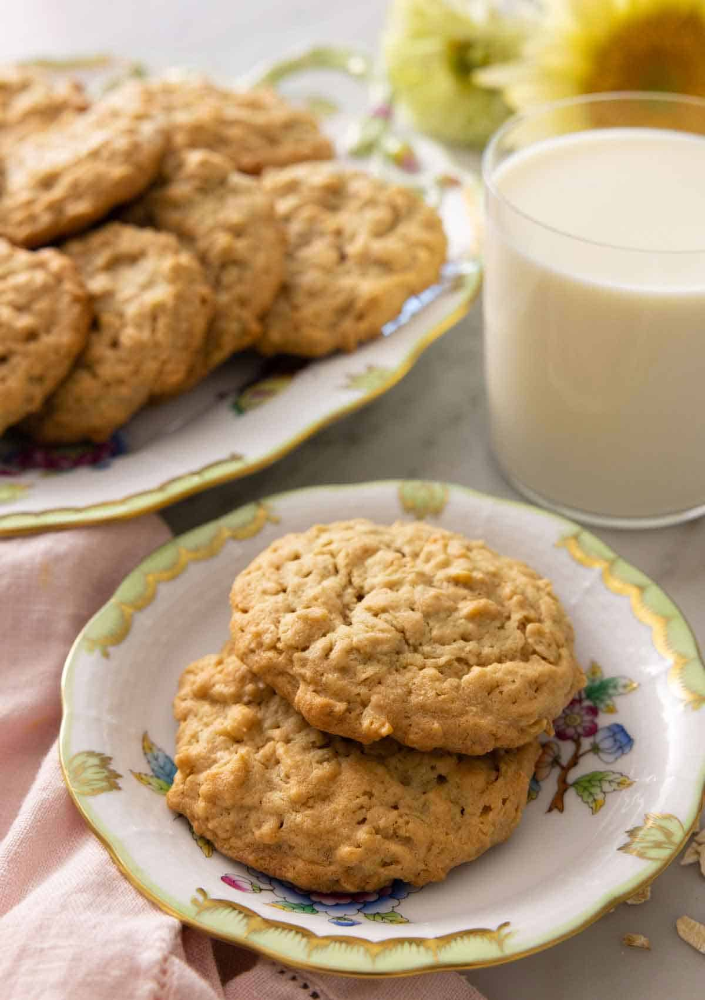

Peanut Butter Oat Cookies

Description
These crowd-pleasing peanut butter oat cookies are the perfect combination of sweet and
savory, crunchy and chewy. They can be eaten as a breakfast treat, a midday snack,
or a wonderful dessert. Best of all, they're incredibly easy to make.
Ingredients
- 180g all-purpose flour
- 1 tsp baking soda
- 3/4 tsp salt
- 227g unsalted butter (room temperature)
- 255g creamy peanut butter
- 165g light brown sugar
- 150g granulated sugar
- 2 large eggs
- 2 tsp vanilla
- 280g old-fashioned rolled oats
Instructions
- Preheat the oven to 350F. Line a baking sheet with
parchment paper or a silicone baking mat.
- In a medium bowl, whisk together flour, baking soda, and
salt.
- In a large mixing bowl or the bowl of a stand mixer fitted
with the paddle attachment, beat butter and peanut butter
on medium-low speed until smooth and well combined. Add the
sugars and beat on medium speed until light and fluffy, about
2 minutes.
- Beat in the eggs and vanilla on medium speed until well combined,
stopping to scrape down the bowl as needed.
- With the mixer on low, add the flour mixture, mixing just
until almost combined. Scrape down the bowl and add the
rolled oats. Mix just until combined.
- Scoop roughly 2 tablespoons of cookie dough onto the baking
sheet, placing each cookie about 2 inches apart.
- For gooey cookies, bake for about 12 minutes or until the
edges are set but the center still appears wet or shiny. For
crispier-edged cookies, bake for about 15 minutes or until the
edges and tops are lightly browned and the center is no longer
shiny. Let cookies cool on the pan for 5 minutes. Remove and
finish cooling on a wire rack.
Notes
- Make sure your brown sugar is soft and moist for the best
cookies.
- Don't overbake the peanut butter oat cookies, as they'll
continue to bake as they cool. The middle should still be
soft when you pull them out.
- Add a pinch of cinnamon for extra flavor.
- A room temperature egg will mix more evenly into the
creamed butter.
- Measure your flour correctly to avoid dry and dense
cookies.
Nutrition
Calories: 249kcal | Carbohydrates: 27g | Protein: 5g | Fat: 14g
| Saturated Fat: 6g | Polyunsaturated Fat: 2g | Monounsaturated Fat: 5g
| Trans Fat: 1g | Cholesterol: 36mg | Sodium: 177mg | Potassium: 126mg
| Fiber: 2g | Sugar: 14g | Vitamin A: 259IU | Calcium: 21mg | Iron: 1mg